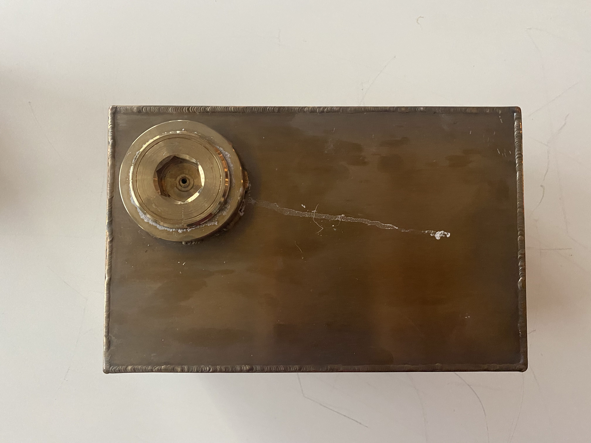
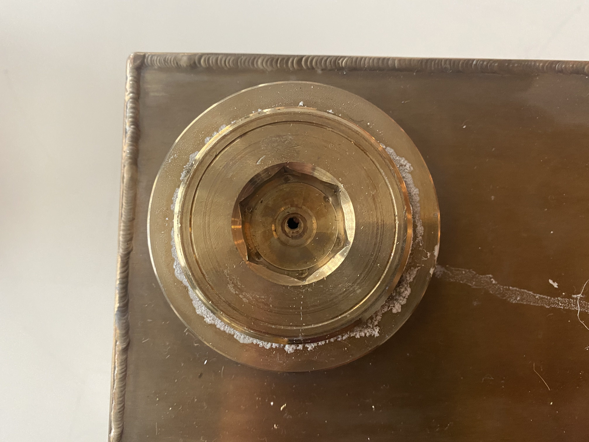
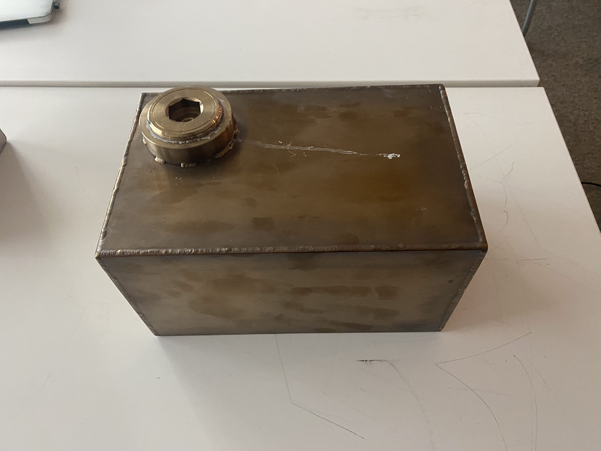
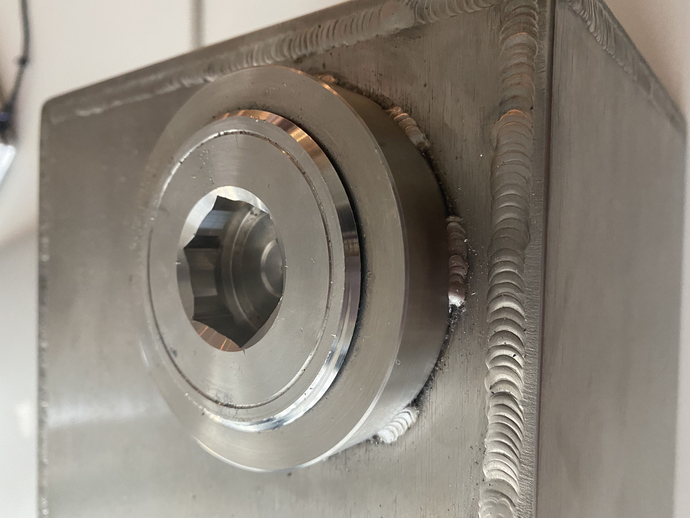
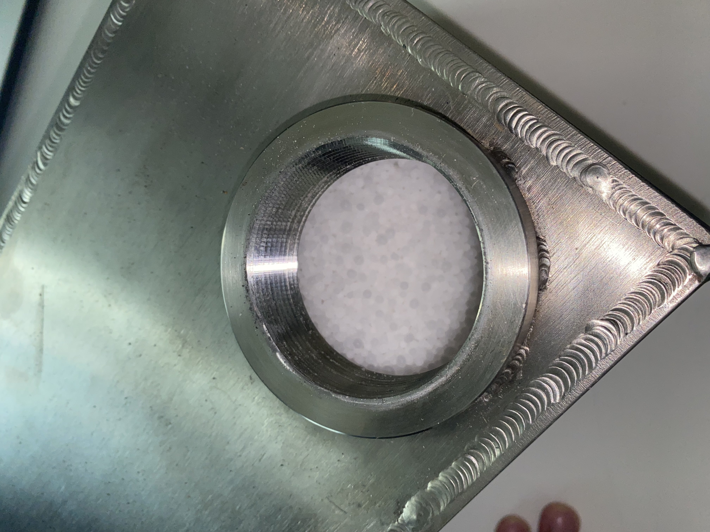
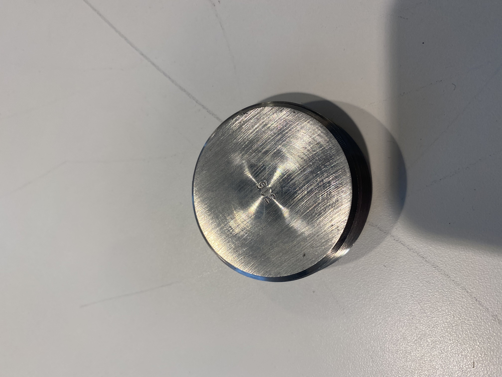

<topbar style="display:none;">
<item><a href="../index.html">Home</a></item>
<item><a href="../about.html">About</a></item>
</topbar>
<style>
a:link {
color: blue;
background-color: transparent;
text-decoration: underline;
}
a:visited {
color: pink;
background-color: transparent;
text-decoration: underline;
}
</style>
## Week 6
<br>
#### Systems Thinking for Climate and Sustainability Systems Presentation
* Systems thinking
* SAFO Framework
* System Architecture - what is it and how does it operate
* Mechanics, hardware, software
* structure (static) and behavior (dynamic)
* System Function - what does the system do?
* system interacting with environment
* System Outcome - in what ways does the system function affect people?
* What is the problem solved, the affected people, benefits, tradeoffs
* expected and unexpected outcomes, positive and negative
* Systems presentations
* Systems integration team
* Benefit: emission free on-demand cooking
* Improve: electrical system, make things more user friendly
* Detriment: storage and high temperature ranges
* Improve: change the storage material
* Energy collection system
* Benefit: renewable energy source
* Improve: lenses or reflectors
* Detriment: takes up a lot of space
* Improve: foldable, make aesthetically pleasing, multipurpose use of space
### Salt batteries
Contains sodium nitrate (NaNO3) and potassium nitrate (KNO3). [Safety data sheets.](https://beta-static.fishersci.com/content/dam/fishersci/en_US/documents/programs/education/regulatory-documents/sds/chemicals/chemicals-s/S25558B.pdf)
6"x7"x11", 1/4 inch thick, around 85% salt it appears.
<br>






* Questions for the box
* full specs on the box and the steel used
* how many times was it heated
* why the leak
* why a hole drilled
* thermal expansion of the box/potential problems that they already encountered
* proportion/how much of the salt was put into the box
* who was it that designed the box
* How to do the thermal transfer?
* Direct conduction between the surface of the box and the cooking top
* Like the insulator/conductor drawing
* Have a fluid be heated up and then move hot fluid to the cooking surface
* Like a heat pipe or a heat transfe fluid
* Could add more control
* fins and complementary fins
* Change height of cooking surface to increase or decrease surface area and control the heat transfer
* Could provide a lot more surface area
* Maybe dovetails somehow
#### Prototyping!
<br>
Next step is to probably create prototypes to test these systems. Useful things
could be found via McMaster-Carr.
#### Convection heat transfer idea
* Specs
* Liquid
* [Here are some heat transfer fluids](https://www.therminol.com/heat-transfer-fluids)
* Might be a bit more industrial than what we need it for, but if one of these can work then they can work
* [An application for solar water heating systems](https://www.energy.gov/energysaver/solar-water-heaters/heat-transfer-fluids-solar-water-heating-systems)
* [How To Pick the Right Heat Transfer Fluid](https://www.dow.com/content/dam/dcc/documents/en-us/tech-art/176/176-01616-01-how-to-choose-the-right-heat-transfer-fluid.pdf?iframe=true)
* Pump
* [Heat transfer pump for concentrated solar power](https://www.sulzer.com/en/shared/applications/heat-transfer-fluid-pump-for-concentrated-solar-power)
* [CHOOSING THE PROPER PUMP FOR YOUR HEAT TRANSFER SYSTEM](https://durathermfluids.com/choosing-proper-pump-heat-transfer-system/)
* Centrifugal pump
* Heat transfer putty
* 'Heat Conductive Putty is used to fill voids between cable and pipe surfaces; to increase contact between pipes and heating cables in maximize heat conductivity.'
* Can be bought
* Tubing
* [The Thermal Conductivity of Common Tubing Materials
Applied in a Solar Water Heater Collector](http://ascpro0.ascweb.org/archives/cd/2010/paper/CPRT192002010.pdf)
* Potential prototype heating surface